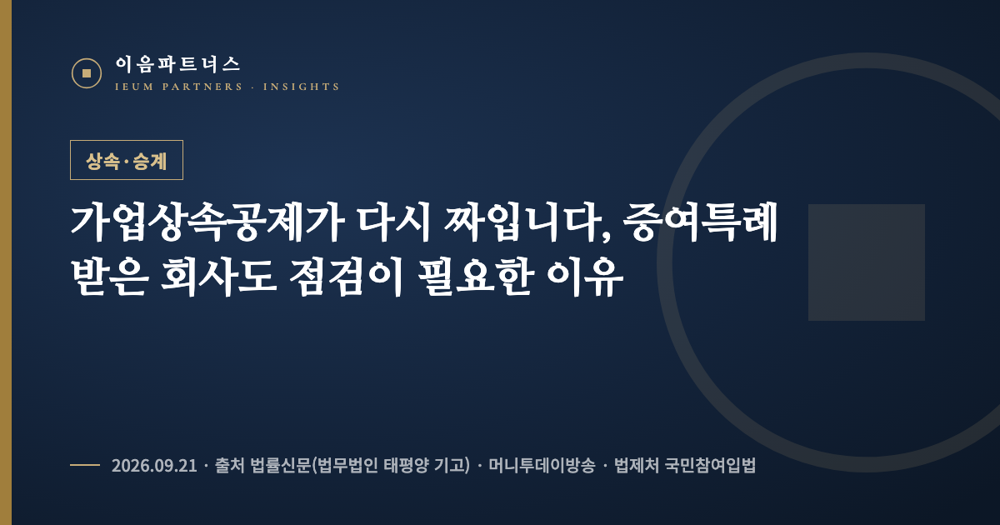

가업상속공제가 다시 짜입니다, 증여특례 받은 회사도 점검이 필요한 이유

정부가 2026년 8월 3일 발표한 세제개편안에는 가업상속공제와 가업승계 증여세 과세특례를 처음부터 다시 짜는 내용이 들어 있습니다. 가업상속공제는 회사를 물려받을 때 상속재산에서 일정 금액을 빼 주는 제도이고, 증여세 과세특례는 부모가 생전에 회사 주식을 넘기면 낮은 세율을 적용해 주는 제도입니다. 이 글에서는 무엇이 바뀌는지와 이미 증여특례를 받은 회사가 따져 볼 점을 정리합니다.
개편안은 2027년 7월 1일 이후 상속이 시작되는 분부터 적용될 예정입니다. 다만 아직 국회 심사 중인 정부안이어서 최종 내용은 달라질 수 있습니다(법제처 국민참여입법센터). 우리 회사가 어디에 해당하는지 궁금하시다면 카카오톡 채널 이음파트너스에서 함께 살펴볼 수 있습니다.
무엇이 바뀌나
가장 큰 변화는 '가업'의 뜻을 처음으로 법에 두는 것입니다. 특허권, 영업비밀, 산업기술, 숙련기술 같은 전문 기술이나 경영 노하우를 가진 기업만 가업으로 보고, 해당 여부는 새로 만드는 가업상속공제 심사위원회가 판단합니다(머니투데이방송).
| 구분 | 내용 |
|---|---|
| 대상 업종 | 한국표준산업분류 세세분류 기준 727개로 정비해 법률에 직접 규정 |
| 경영기간 | 10년 이상 → 원칙 30년 이상(20년 이상이면 부족한 기간만큼 사후관리 연장 조건) |
| 후계자 근무기간 | 상속 전 2년 이상 → 5년 이상 |
| 공제한도 | 300억·400억·600억 원 → 경영연수 × 20억 원, 최대 1,000억 원 |
| 사후관리 기간 | 5년 → 10년 |
| 겸업 기업 | 공제 업종 부분만 매출액 등으로 나눠 공제 |
마트, 프랜차이즈, 임대수입 중심의 부동산업, 버스·택시 운송업, 주차장업, 창고업, 병원, 약국 등은 주요 제외 업종으로 제시됐습니다. 반대로 백년소상공인이나 명문장수기업으로 지정된 기업은 업종 요건을 갖춘 것으로 봅니다. 수도권 기업은 공제받을 수 있는 토지 범위가 크게 줄고, 1㎡당 1,000만 원 상한도 새로 생깁니다.
이미 증여특례를 받았다면 무엇을 봐야 하나
특히 짚어 볼 곳은 이미 증여세 과세특례를 받은 회사입니다. 특례로 넘긴 주식은 시간이 얼마나 지났든 부모가 돌아가실 때 증여 당시 가격으로 상속재산에 다시 더해집니다. 이때 가업상속공제를 이어 받지 못하면 최고 50% 상속세율로 다시 계산될 수 있습니다.
그런데 개편안에는 이미 특례를 받은 사람에 대한 경과규정(법이 바뀔 때 기존 대상자에게 옛 규정을 적용할지 정하는 조항)이 명확하지 않습니다. 현행 요건으로 특례를 받았더라도 2027년 7월 이후 상속이 시작될 때 새 경영기간·업종 요건을 채우지 못하면 공제를 이어 받지 못할 수 있다는 지적입니다. 기고문은 시행 전 증여를 “현행 제도를 활용할 수 있는 마지막 기회”로만 보는 데에는 주의가 필요하다고 설명했습니다(법률신문).
2021년부터 2025년까지 증여세 과세특례 결정 건수는 1,955건, 증여재산가액은 약 3조 7,196억 원에 이릅니다. 영향을 받는 회사가 적지 않은 만큼 국회 심의와 시행령 개정 과정에서 경과규정이 마련되는지 지켜볼 필요가 있습니다.
대표님이 지금 확인할 것
- 창업주의 실제 경영기간과 대표이사 재직기간을 보여 줄 등기·취임 자료
- 우리 업종이 727개 대상 업종에 들어가는지, 겸업이라면 사업별 매출·자산을 나눠 관리하고 있는지
- 후계자의 회사 근무 기간이 상속 전 5년을 채울 수 있는지
- 이미 증여특례를 받았다면 공제가 이어지는 경우와 아닌 경우의 상속세를 각각 계산해 보기
참고한 자료
- 2026년 정부 세제개편안 – 가업승계 관련 개정사항 — 법률신문(법무법인 태평양 기고) (2026.09.21)
- 가업상속공제 전면 재설계…제3자 승계시 세제지원도 [2026 세제개편] — 머니투데이방송 (2026.08.03)
- 상속세 및 증여세법 일부개정법률안(정부, 제2221045호) — 법제처 국민참여입법센터 (2026.09.03)
승계 계획은 확정 법률을 기다리기보다 지금의 요건 충족 여부부터 점검해 두는 것이 안전합니다. 궁금한 점은 카카오톡 채널 이음파트너스로 문의해 주세요.
※ 이 글은 일반적인 정보 제공을 위한 것으로, 개별 사안은 세무사·노무사 등 전문가와 함께 확인하시기 바랍니다.